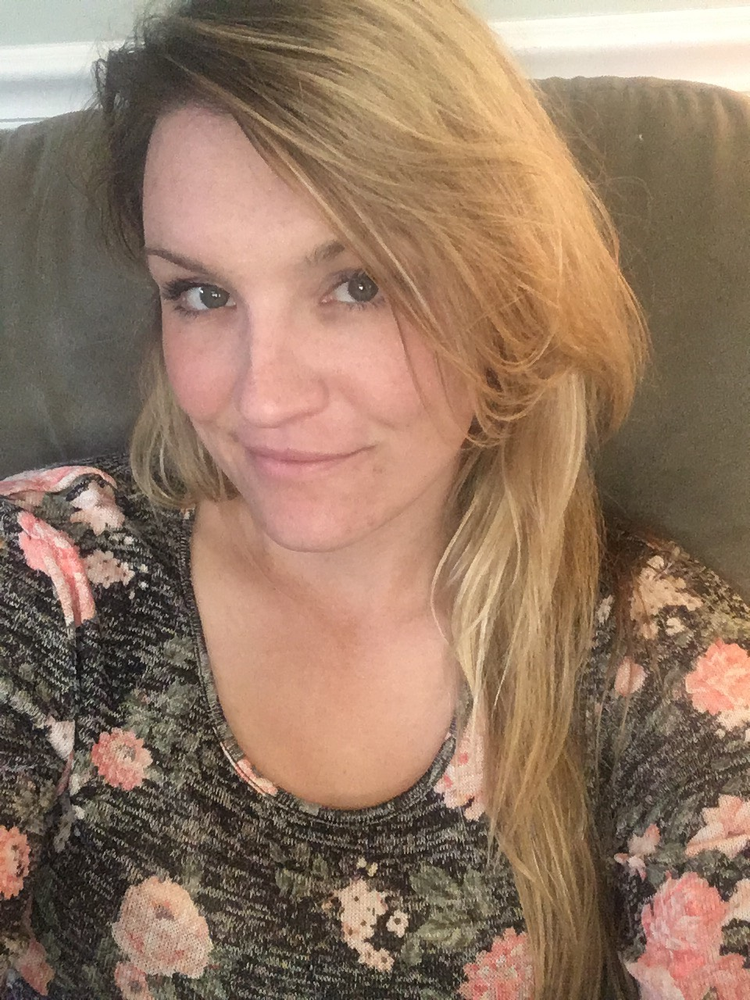

About Me

My name is Amber. I am currently working on improving my life with a new career path in web development; something I have always had interest in. Most of my past experience involves managing high profile horse farms in the areas I have lived in; it has given me a drive to be concise in my ethic and attention to detail. Taking care of fragile athletes to the utmost and making sure their owners are content has also groomed my communication skills with clients.
When I'm not working, I am a stay at home mom of two. They are my greatest drive to make a better life and be the best role model for them I can be. I have goals now that I want to achieve and watch myself grow and go farther than I ever saw myself going.
I am originally from southern New Hampshire, I moved to the Mid-Atlantic area when I was a teenager and there began my drive to learn everything horses. As I have gotten older, I realize I wish my passion to only be my passion and not my career. I want something that challenges me daily and drives me to continuously learn; like horses, there is always something to learn and I find that most interesting in all that I have done in my life. I personally love when I am given a challenge and completing it. The satisfaction of a job well done after overcoming the challenges, feeling like I have achieved something drives me to do better and push myself.